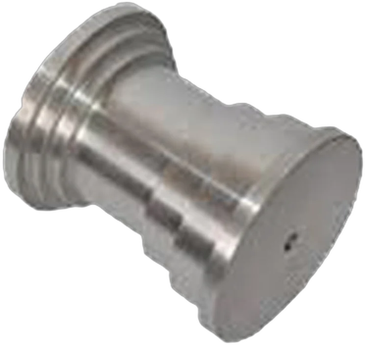

Bred maskinpark med hög kvalitet
För att kunna hjälpa kunderna med det mesta inom branschen har vi valt ett brett urval av maskiner – från CNC-svarvar och fleroperationsmaskiner till ugn, blästerskåp och ultraljudstvätt.

Nyckelkapacitet
Det här klarar verkstaden
Största svarvdiameterØ 550Längd upp till 1050
Daewoo Puma 350
Horisontell fleroperation4axlar2 paletter · X500 Y450 Z450
Hitachi Seiki HC400-40
Värmebehandling1 200°CUgn B550 D850 H400
Nabertherm
Presskraft100tonPlus Origo HPM-10, 10 ton
HIAB
Maskinlista
Alla maskiner
Undrar du över kapacitet för ett visst jobb? Kontakta oss.
CNC-bearbetning
| Maskin | Fabrikat | Data |
|---|---|---|
| Bandsåg | Thomas 290 AO | NC-styrd |
| CNC-svarv | Daewoo Puma 8 | 8" chuck · kortstångsmagasin Kupa LM 65 ECO · spindelgenomgång 47 · max Ø 210, L 350 |
| CNC-svarv | Daewoo Puma 10S | 10" chuck · spindelgenomgång 64 · max Ø 254, L 770 |
| CNC-svarv | Daewoo Puma 350 | 15" chuck · spindelgenomgång 117,5 · max Ø 550, L 1050 |
| CNC-svarv | Nakamura Super Turn 3 | 10" chuck · spindelgenomgång 42 · max Ø 275, L 580 |
| Horisontell fleroperationsmaskin | Hitachi Seiki HC400-40 | 4 axlar · 2 paletter · max verktygslängd 300 · X500 Y450 Z450 |
| Vertikal fleroperationsmaskin | Yamaguchi YMV-60MW | 3 axlar · styrd delningsapparat · 6" chuck · X610 Y460 Z510 |
Svets, termisk sprutning & värmebehandling
| Maskin | Fabrikat | Data |
|---|---|---|
| MIG-svets | Migatronic Dyna MIG 335 | – |
| TIG-svets | L-Tec TIG 250 AC/DC | – |
| Svets | Norgas SL-22 | 200 A |
| Termisk sprutning | Castolin | 2 st Super Jet · 1 st Castodyn DS 8000 |
| Ugn | Nabertherm | B550 D850 H400 · max 1 200 °C |
Manuell bearbetning
| Maskin | Fabrikat | Data |
|---|---|---|
| Bandsåg | Pehaka USF-4 | – |
| Borrmaskin | Alzmetall | 4 spindlar |
| Bänkborrmaskin | Mako | – |
| Hyvel | Jochnick & Norrmans | Slaglängd 630 |
| Kil-/splintmaskin | Ravensburg | – |
| Press | HIAB | 100 ton |
| Press | Origo HPM-10 | 10 ton |
| Supportsvarv | H. Ernault Somua | Kopieringsaggregat · 10" chuck |
Polering & ytbehandling
| Maskin | Fabrikat | Data |
|---|---|---|
| Blästerskåp | – | B1600 D800 H900 · blästermedel glas |
| Polermaskin | BRK Autopol | 3 spindlar · inv. polerslag 320 · max Ø 180 |
| Rotationstrumlare | – | B200 D350 H200 |
| Vibrationstrumlare | – | B1000 D450 H600 |
Tvätt & rengöring
| Maskin | Fabrikat | Data |
|---|---|---|
| Hetvattentvätt | SME | B780 D780 H450 |
| Ultraljudstvätt | – | B400 D400 H200 |
Har du en ritning eller en detalj som behöver tillverkas?
Skicka ritning och beskrivning, så återkommer vi med pris och leveranstid. Eller ring – vi svarar vardagar 07–16.